산을 먼저 읽게 한다
완만한 단일 봉우리 대신 층·능선·수로가 카메라에서 겹치지 않도록 생성하고 검증합니다.
Remediation report · 2026-08-02
현재 프로젝트는 물리·페인트·세 기믹의 동작 기반은 갖췄습니다. 그러나 고정된 세 개의 완만한 산, 작은 primitive 아이템, 영어 전용 UI, 불분명한 조작 때문에 원본 지시문과 제공된 레퍼런스가 약속한 “거대한 산을 읽고 한 발을 계획하는 게임”으로 보이지 않습니다.
01 · Fresh running evidence
아래 “현재” 이미지는 이번 감사에서 Windows 릴리스 실행 파일로 새로 캡처했습니다. 레퍼런스와 생성 제안 이미지는 구현 증거가 아니라 비교·설계 기준입니다.
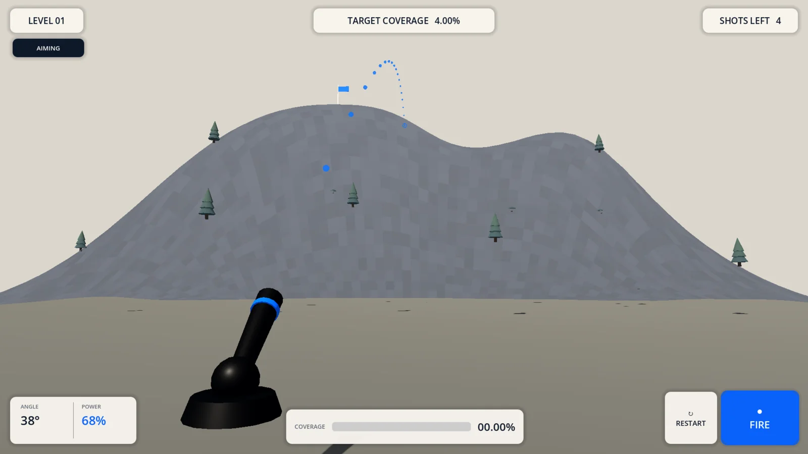
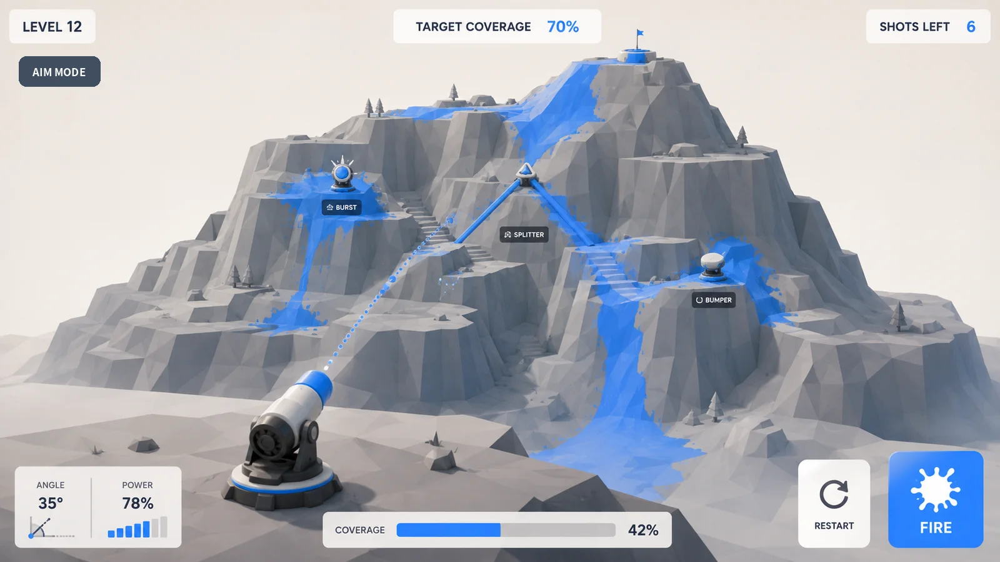
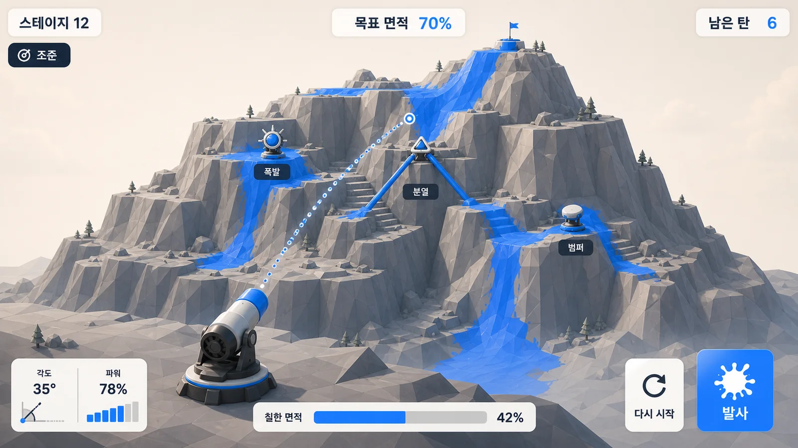
완만한 단일 봉우리 대신 층·능선·수로가 카메라에서 겹치지 않도록 생성하고 검증합니다.
텍스트 라벨에 의존하지 않고 원형·삼각형·방향성 형태와 화면상 최소 크기를 보장합니다.
상단 정보 3개와 하단 조작 3영역만 유지하고 산 위의 상시 패널을 금지합니다.
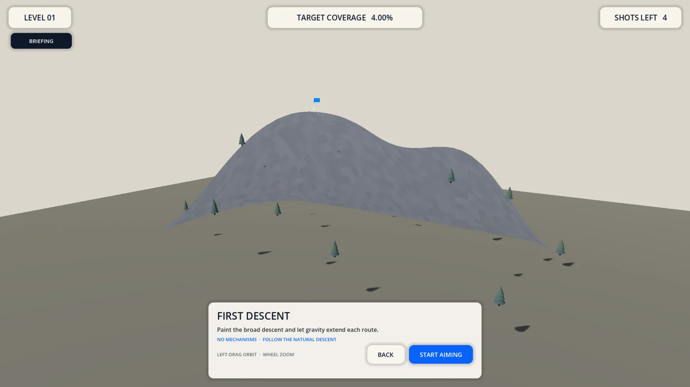
지형 확인: 산의 표면은 보이지만 경로와 기믹을 읽는 “브리핑” 목적을 충족하지 못합니다. 영어 설명도 기본 한국어 요구와 충돌합니다.
한 발 계획: 탄도 기능은 있으나 조작이 화면에서 발견되지 않고, 기믹·탄착 마커·산의 구조적 깊이가 약해 의도적 조준이 어렵습니다.
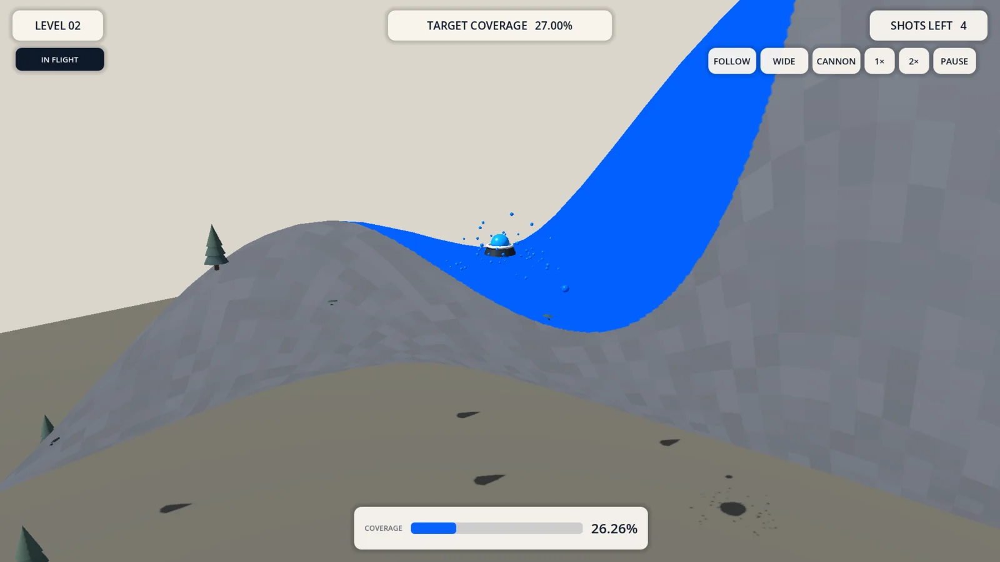
결과 관찰: 파란 페인트와 범위는 보입니다. 다만 평면 마스크처럼 보여 “두껍고 만족스러운 흐름”이 약하고, 상단 보조 버튼이 시야를 분산합니다.
02 · Evidence-backed gap map
“없다”와 “있지만 사용자가 읽을 수 없다”를 구분했습니다. 우선순위는 현재 플레이 경험에 미치는 영향 기준입니다.
| 영역 | 현재 사실 | 필요한 상태 | 판정 |
|---|---|---|---|
| 산 생성 | TerrainMeshFactory가 세 개의 고정 높이 수식 중 하나를 선택. RNG·seed·난도 지표 없음. |
시드 기반 경로 우선 heightfield, 단계별 고저 반전·경로 폭·분기 지표, 제한된 재생성. | P0 · 없음 |
| 아이템 배치 | Stage Resource의 고정 X/Z 좌표를 그대로 spawn. 시야·경사·도달 가능성 검증 없음. | 선반/능선/수로 후보 추출 후 기믹별 규칙, 화면상 최소 크기, LoS, 물리 경로 검증. | P0 · 부분 |
| 기믹 동작 | 폭발·분열·범퍼의 효과, reset, payload, cooldown, 8-ball guard는 구현됨. | 동작은 유지. 표현만 장면 기반의 두꺼운 3D 실루엣으로 교체. | 유지 |
| 조준·파워 | 좌클릭 drag, A/D·W/S, wheel·Q/E, Space가 CannonController에 직접 결합. |
마우스로 탄착 목표를 직접 지정, −/+·세그먼트·wheel로 파워 조정, Space/버튼 발사. | P0 · 재설계 |
| 궤적 | 실제 탄도와 같은 계산으로 첫 충돌에서 중단. 기능은 맞지만 점·마커가 작음. | 총구부터 첫 충돌까지 끊김 없이 표시하고, 탄착 링의 최소 화면 크기와 invalid 상태 보장. | P1 · 개선 |
| 한국어 | 기본 en, 선택지도 en 하나. Translation resource와 tr() 사용 없음. |
기본 ko, en 전환·저장, 전 화면 번역 키, StageData의 표시 문자열 분리. |
P0 · 없음 |
| 폰트·Theme | Godot 기본 폰트와 각 노드의 크기/색 override. 공용 폰트·Theme 없음. | Pretendard 기반 Theme, 일관된 weight/spacing/radius/focus, 한글 glyph 검증. | P0 · 없음 |
| 외부 에셋 | 절차 primitive 외 runtime 에셋과 license ledger 없음. | 승인된 CC0/OFL 파일만 최소 단위로 import하고 출처·버전·용도를 기록. | P1 · 승인 필요 |
| HUD layout | 필수 영역은 있으나 고정 offset과 영어 텍스트, 약한 기믹/지형 위계. | 레퍼런스의 edge layout, 한국어 fit, 1280/1600/1920 검증, 실제 아이콘. | P0 · 재구성 |
03 · Deterministic procedural content
산을 단순 noise로 만들면 게임이 아니라 우연한 울퉁불퉁함이 됩니다. 먼저 플레이 경로와 착지 선반을 만들고, 그 구조를 heightfield로 변환해야 합니다.
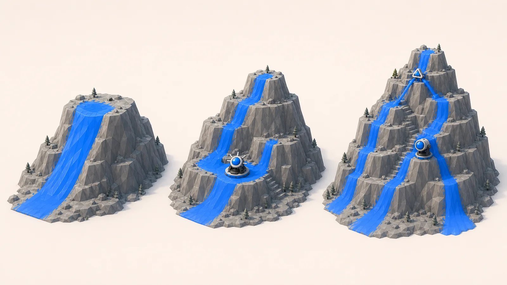
stage_id + version + seed + profile이 같으면 grid checksum도 같습니다.04 · Aiming, power and trajectory
현재 drag 감도는 플레이어의 의도를 화면에 드러내지 않습니다. 첫 탄착점을 직접 고르고, 파워가 만드는 포물선과 충돌 가능성을 즉시 보는 방식으로 바꿉니다.
마우스를 산 위로 이동
hover 지점에 임시 탄착 링과 low-arc 미리보기를 표시합니다.
클릭 또는 drag로 목표 고정
현재 파워에서 가능한 yaw/elevation을 계산합니다.
− / + 또는 세그먼트로 파워 조절
클릭은 2%, hold는 300 ms 후 반복, wheel은 1% 단위입니다.
Space 또는 발사 버튼
valid 목표일 때만 한 발을 소비합니다.
05 · Korean-first UI system
화면마다 영어 문자열과 style override를 고치는 방식은 중단합니다. 하나의 Theme, 번역 키, 짧은 용어 체계로 모든 상태를 묶습니다.
| Stage | 스테이지 |
| Target coverage | 목표 면적 |
| Coverage | 칠한 면적 |
| Shots left | 남은 탄 |
| Aim / Fire | 조준 / 발사 |
| Burst / Splitter / Bumper | 폭발 / 분열 / 범퍼 |
translations/ui.csv와 tr(), StageData에는 표시 문자열 대신 key 저장.ko, 설정에서 en 전환, 즉시 반영·재실행 후 유지.06 · License-safe asset shortlist
아래 이미지는 공식 배포 페이지의 미리보기입니다. 리포트 검토용으로만 가져왔고, 게임 runtime pack은 아직 다운로드·적용하지 않았습니다. 선택 세트도 사용자 승인 후에만 import합니다.
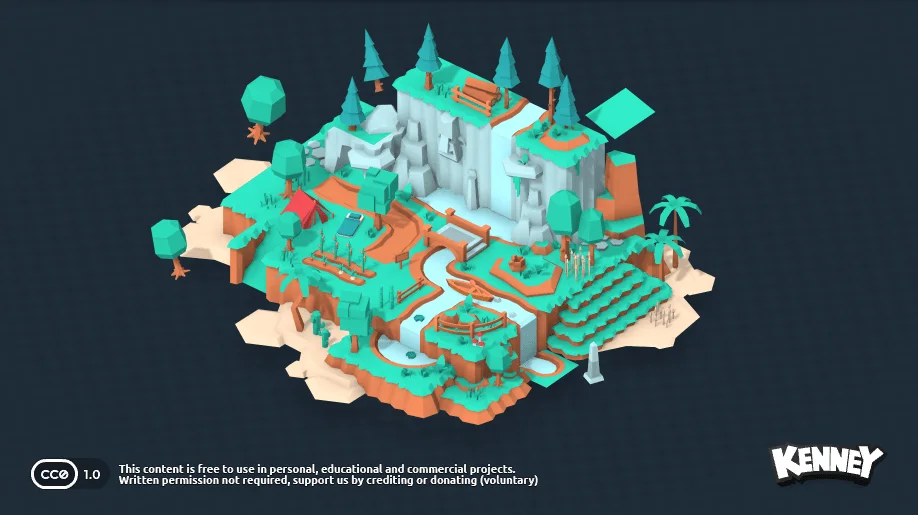
330개 3D 파일. 단순 저폴리 나무·바위·수풀 중 6–10개만 선별하고 채도를 낮춰 scale cue로 사용합니다.
공식 페이지 열기 →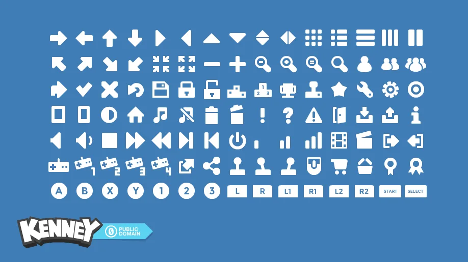
105개 2D 아이콘 중 발사·재시작·목표·설정·카메라·속도 아이콘만 사용합니다. 단색이라 레퍼런스 HUD와 잘 맞습니다.
공식 페이지 열기 →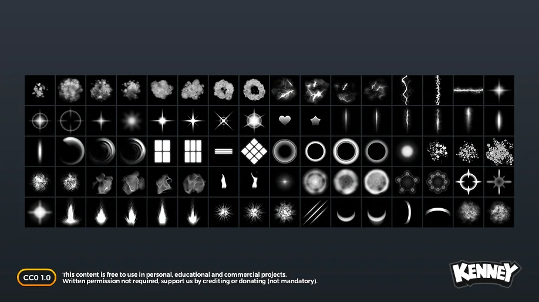
80개 512px VFX 이미지 중 흰 splash·ring·droplet 4개를 파란색으로 tint해 충돌과 기믹 feedback에 사용합니다.
공식 페이지 열기 →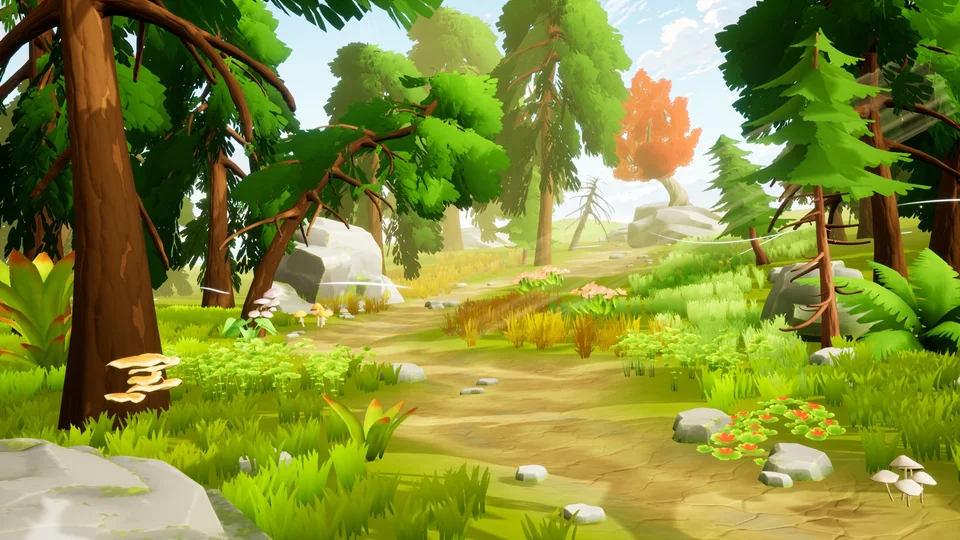
116개 모델, glTF 제공, CC0. 품질은 좋지만 색·텍스처 밀도가 현재 목표보다 높고 free/source 범위가 나뉘어 예비 후보로만 둡니다.
공식 페이지 열기 →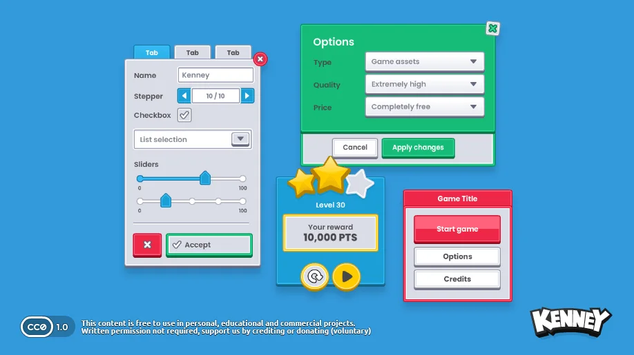
430개 UI 파일과 CC0 라이선스는 좋지만, colorful generic skin이 레퍼런스의 절제된 흰 panel과 맞지 않습니다.
공식 페이지 열기 →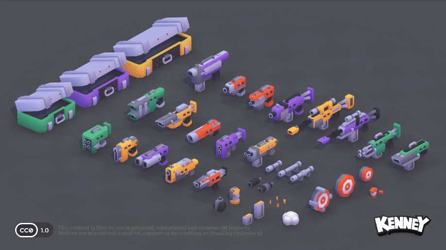
40개 3D 파일과 CC0이지만 handheld weapon으로 읽힙니다. 대포는 현재 pivot 구조를 살린 전용 산업형 scene으로 제작합니다.
공식 페이지 열기 →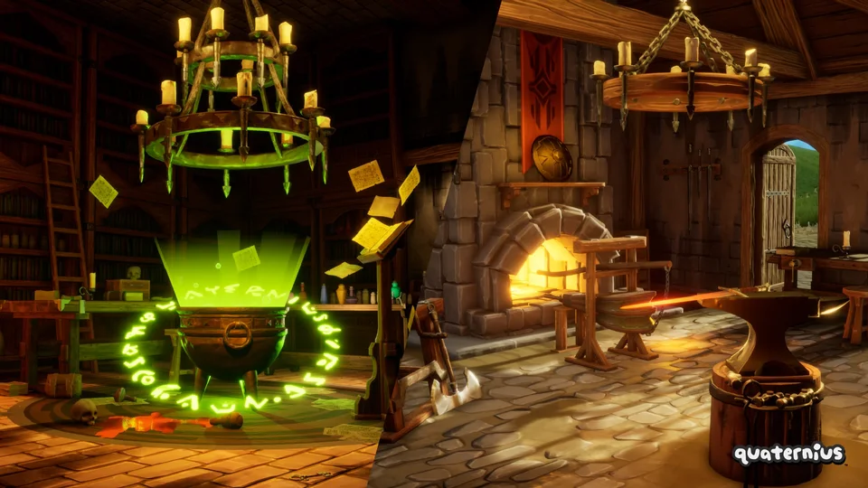
211개 저폴리 모델과 glTF/CC0은 유리하지만 중세 소품 언어가 산악 페인트 퍼즐의 기믹과 충돌합니다.
공식 페이지 열기 →한글·영문 혼합 UI에 적합한 가변 폰트. Godot가 지원하는 WOFF2를 번들하고 OFL 원문을 함께 배포합니다.
공식 저장소 열기 →docs/asset-licenses.md에 기록합니다.
07 · Decision-complete execution
상세 파일·소유권·검증 명령·실패 정책은 활성 ExecPlan에 기록했습니다. 아래 순서는 사용자에게 보이는 checkpoint를 앞쪽에 두고, 기존 물리 시스템 회귀를 매 단계 막습니다.
완료로 표시된 기존 문서를 실제 상태로 바로잡고, 생성 지표·한국어 용어·시각 비교 기준을 고정합니다.
First Descent를 seed/profile 기반으로 생성해 기존 paint/state/replay 흐름까지 실제 플레이합니다.
Stage 2·3의 경로 복잡도, feature-aware placement, 화면상 크기와 전용 3D 실루엣을 완성합니다.
입력 책임을 분리하고 direct target, −/+, invalid state, 첫 충돌까지의 선명한 preview를 구현합니다.
Pretendard, ko/en 번역, reference-aligned HUD, 선택한 CC0 파일과 license ledger를 적용합니다.
세 physical solution, replay/save, 성능, 세 해상도, 두 locale, production export와 7개 실제 스크린샷을 검증합니다.
StageController의 상태·shot·clear/fail 단일 소유권PaintSystem의 단일 runtime mask08 · Sources and limits